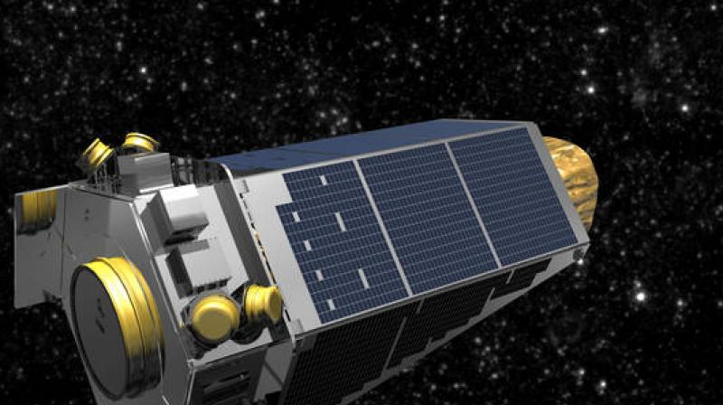

By Nisith DeSilva
As far as we’ve ever known, Earth has been the only planet out in the universe that is capable of supporting life. Except, that's totally incorrect, because the requirements for life can actually be met on a number of different planets, most which are millions of light years away. It may actually be possible for some of these exoplanets (planets beyond our solar system) to support life. But first, let’s go over the requirements for life on a planet. Here's some more information.
There are 5 main elements that make a planet habitable:
As well, the planet needs to be in the habitable zone in its solar system, often called the ‘goldilocks zone’. The goldilocks zone is important because it is the zone where the temperature is just right, and liquid water can exist. However, the habitable zone depends on the star in its solar system; Bigger, hotter stars have habitable zones that are further out, while smaller, cooler stars, like red dwarfs, have habitable zones that are closer to the star.
Life tends to exist in the limited temperature range of -5°C to 115°C. This range allows liquid water to exist under certain conditions. At about 125°C genetic material, protein and carbohydrate molecules start to break apart, and high temperatures quickly evaporate all the water. If the temperature is too low, chemicals react slower, interfering with life processes of organisms. Also, having low temperatures freezes the water, leaving liquid water unavailable.
Water has to be regularly available; life can go through dry periods but there needs to be water available. Having too much water is not a problem, but not to the point where it starts to interfere with the chemistry of life.
Planets around the size of Earth should have atmospheres around 100 miles thick to support life. The atmosphere protects us from solar radiation and small meteorites, and helps regulate surface temperatures too.
There needs to be a steady input of light or chemical energy for cells to run chemical reactions that are necessary for life functions. Light energy can become a problem if there is too much, and it makes the planet too hot, or if there are too many harmful rays, like UV. There should not be any problems with an excess of chemical energy.
Solid planets and moons tend to have the same general chemical makeup, so the same nutrients are present. Nutrient cycles are required to transfer and replenish nutrients that are required by living organisms (carbon cycle, water cycle, nitrogen cycle). Having too many nutrients is not a problem, but having too active a nutrient cycle is because it interferes with the organisms’ ability to get enough nutrients. Also, if nutrients are spread thin enough that they are hard to obtain on a planet, like gas giants, life will not be able to exist.
First of all, what is an exoplanet? The term 'exoplanet' refers to any planet outside of our solar system. Habitable exoplanets are planets outside of our solar system that can support life. The thing is, we can’t just look up in the night sky and find exoplanets; to actually find and look at these rare habitable exoplanets, we rely on observatories. An astronomical observatory is any structure that contains a telescope or any sort of auxiliary instruments used for observing astronomical objects. Observatories are typically either ground-based or space-based.
Now, ground-based observatories are great at observing celestial bodies, but there is only so far you can see from the ground. This leads us to space observatories; objects like telescopes that travel through space and are used for a multitude of purposes other than observation. Since space observatories actually travel through space they can get much closer more accurate observations on planets and other celestial bodies.

Kepler was launched in 2009, with the goal of discovering new earth-sized exoplanets, especially those in the habitable zone, in our region of the milky way galaxy. Kepler uses the ‘transit method’ to discover new planets in other solar systems. When a planet passes in front of a star as viewed from earth, it is called a ‘transit’. This can be observed in our own solar system when Mercury or Venus occasionally transit; it is usually seen as a small black dot passing across the surface of the sun. Kepler finds planets by monitoring the light and looking for regular dimming in the light of the star to conclude whether there are planets orbiting. Using these measurements, we can calculate the orbital size by using the period (amount of time taken to orbit star). The average surface temperature can be found using the orbital size and the temperature of the star, thus allowing us to determine if the planet is habitable or not. Kepler’s original mission ended in 2013, having lasted for 4 years. After that, scientists at NASA decided to give it a new mission called K2. K2 was a way to continue finding planets even after Kepler’s reaction wheels (pointing devices) began to fail. With only two of the original four wheels remaining, it had to now rely on solar wind pressure to reduce torque on the spacecraft, and allowed minimal drift so Kepler would just have to use a combination of thrusters and its two remaining reaction wheels for control. This caused the pace of planetary discovery to slow down, but still allowed Kepler to remain in use. Kepler was officially retired by NASA on October 30, 2018 after it ran out of fuel. Kepler discovered over 2000 exoplanets, and observed over 500 000 stars over its nine-year service. It is regarded as one of the most successful planet hunting missions of all time.
After Kepler was officially shut down in 2018, it was succeeded by TESS. TESS’s mission is to find planets ranging from small rocky ones, to much larger planets, to display the diversity of planets in the Milky Way galaxy. TESS is predicted to find dozens of earth-sized exoplanets, and is expected to find about 20 000 exoplanets total over the course of the two-year mission.
Kepler 442b is an exoplanet that orbits a K-type star (about 0.5 to 0.8 times the mass of the sun) and is 2.36 times the mass of Earth. It takes 112.3 days to orbit around its star, and was discovered back in 2015. It is about 1115 light years away from Earth, in the constellation Lyra.

Kepler 62f is an exoplanet that orbits a K-type star (about 0.5 to 0.8 times the mass of the sun) and is 35 times the mass of Earth. It takes 267.3 days to orbit around its star, and was discovered back in 2013. It is about 1200 light years away from Earth, located in the constellation Lyra.
Kepler 186f is an exoplanet that orbits an M-type star (red dwarf) and is less than 10% larger than the Earth. It takes 130 days to orbit around its star, and was discovered back in 2014. It is about 582 light years away, located in the constellation Cygnus.
So, is life possible outside of Earth? Yes. Do we have evidence of this claim? Yes. Have we found aliens? No. We still have a lot to learn when it comes to extraterrestrial life, and as technology keeps improving, one day we will have a definitive answer to this question.
Want to read again?